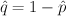
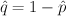
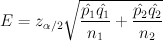
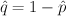

is the sample
proportion, and .
is the sample
proportion, and .
This utility computes confidence intervals for the difference of two population proportions. The confidence interval estimate of p1 - p2 is:
where the margin of error E is given by
, is the sample
proportion, and .
The sample data of the population must be of only two categories. They can be inputted in one of three ways:
The confidence level must be between 0 and 1. For example, enter 0.95 for a 95% confidence level.